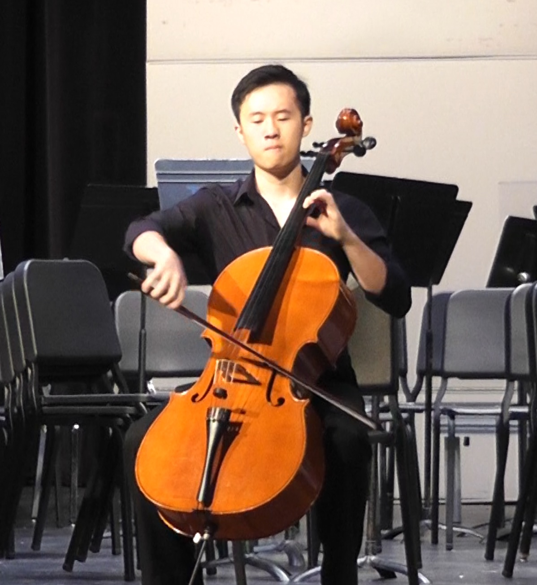
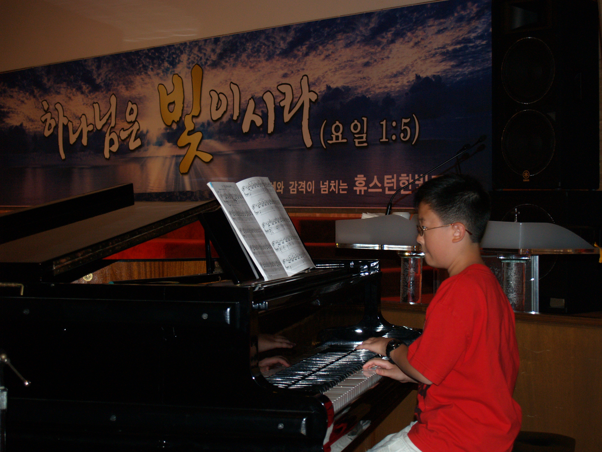
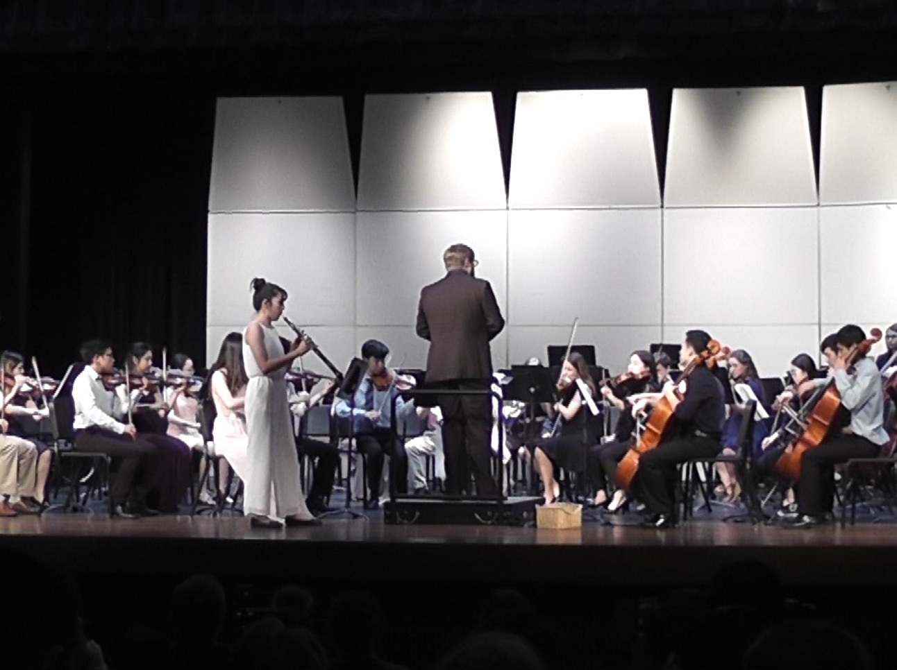

A listening journey · Dale Kang
Classical music
passion talk
What do you picture?
My connection
How I came to love classical music



One word · many worlds
“Classical” is bigger
than the Classical era.
- 01Early500–1400
- 02Renaissance1400–1600
- 03Baroque1600–1750
- 04Classical1750–1820
- 05Romantic1820–1900
- 06Modern1880–1950
- 07Contemporary1950–now

c. 500–1400
Early &
Medieval
Monophony · Polyphony · Church modes not scales

c. 1400–1600
Renaissance
40 independent voices
1600–1750
Baroque
Myth · ritual · motion
Listening break
Did you know this about Vivaldi's Four Seasons?
“Trembling, frozen in the icy snow…”
Sonnet + score · A story being told

1750–1820 · and beyond
Classical
What everyone thinks of when they think Classical
Watch
Salieri hears
Mozart
A scene from Amadeus
Then listen
What do you see in the music?
ImageEmotionMemory
1820–1900
Romantic
Deep emotion
Enormous sound
Listening break
Mimicking the human voice
↗ reaching··· insisting— one breath
◢ pressure∅ voice breaks↘ release
c. 1880–1950
Modern
Color · fracture · new voices
1950–present
Contemporary
Story becomes visible
Final listening break
Interstellar
Interstellar · Day OneScaleSettingTime


Coda
What did
you hear?
Which sounds were your favorite?